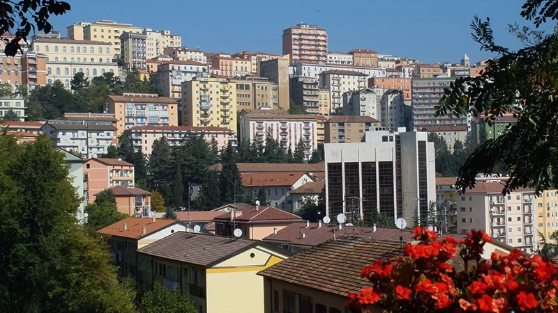

Potenza
Potenza è il capoluogo della Basilicata, una regione situata nel sud Italia. Situata su una collina a circa 819 metri sopra il livello del mare, Potenza è conosciuta non solo per la sua posizione panoramica, ma anche per la sua ricca storia e cultura.
Una delle celebrazioni più importanti di Potenza è la festa di San Gerardo, il Santo Patrono della città, che si tiene il 30 aprile. Durante questa festa, la città è animata da processioni, concerti, spettacoli di fuochi d'artificio e altre manifestazioni culturali. Anche il Carnevale ha una sua importanza, con sfilate di carri allegorici e costumi colorati.
La gastronomia di Potenza e della Basilicata in generale è ricca di sapori autentici, con piatti a base di ingredienti locali. Tra i piatti tipici ci sono le orecchiette con le cime di rapa, il pezzente (un piatto a base di carne di maiale), e formaggi come la cacioricotta. L'olio d'oliva lucano è molto rinomato e viene utilizzato in molti piatti.
Potenza presenta un mix di architettura storica e moderna. Il Duomo di San Gerardo, risalente al XII secolo, è un luogo di grande importanza religiosa e architettonica. Altri edifici storici includono il Palazzo di Giustizia e il Palazzo del Comune.
La tradizione musicale lucana è molto viva, con l’utilizzo di strumenti tipici come la fisarmonica e il tamburello. La taranta è una danza tradizionale che viene spesso eseguita durante le feste popolari.
Il dialetto potentino e lucano è una variante del napoletano, con influenze proprie che riflettono la storia e le tradizioni della regione.
Potenza ospita eventi culturali e festival che richiamano artisti e visitatori. La rassegna "Potenza Jazz", ad esempio, è un importante evento musicale che si svolge annualmente, portando live performance di artisti di spicco.
|  |  |
Qui sotto ho messo a disposizione il sito del Comune di Potenza!